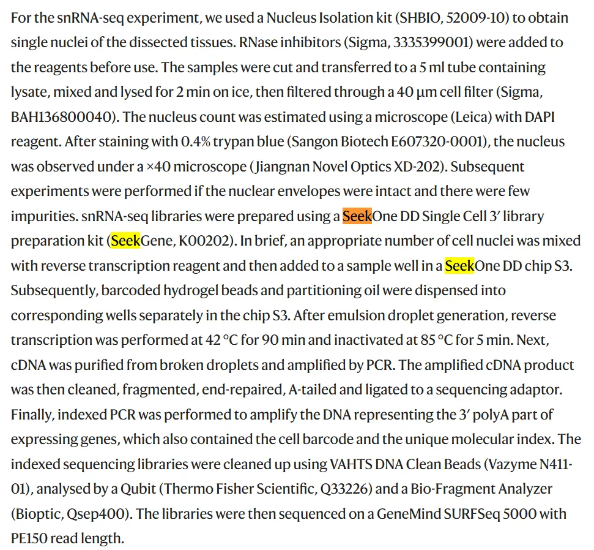
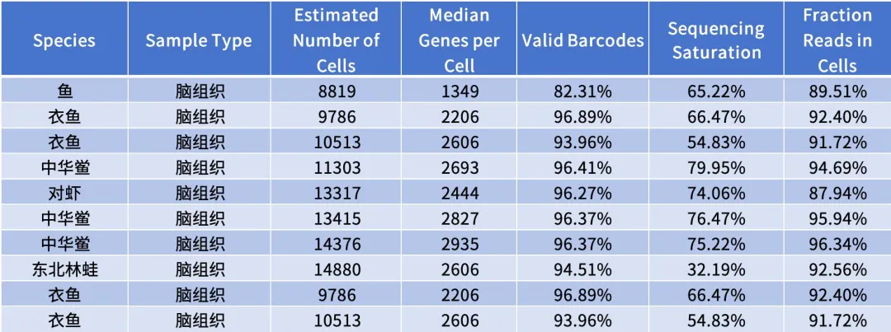
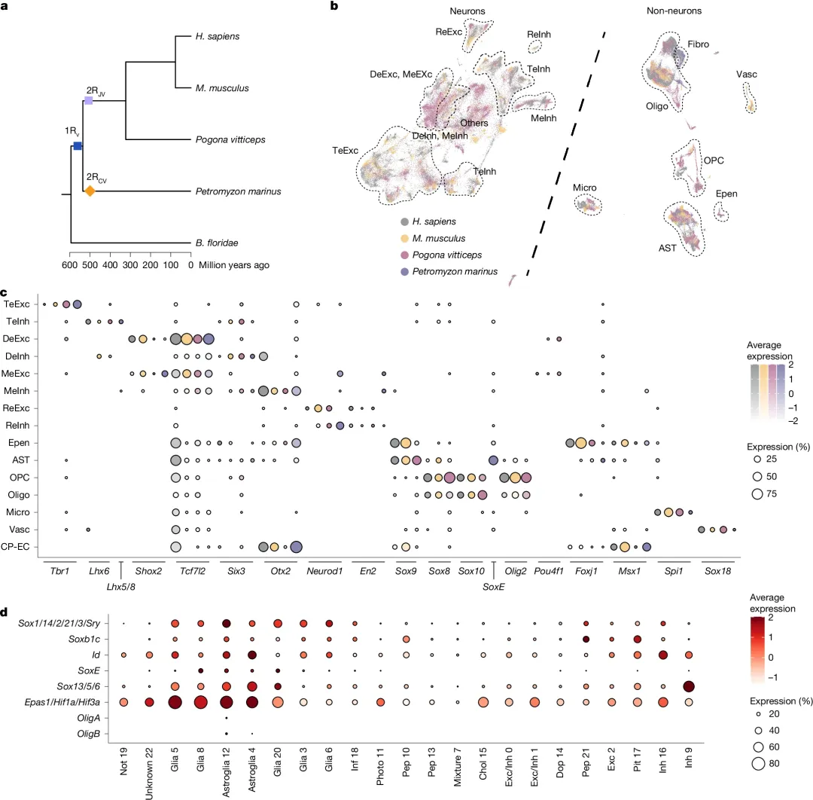
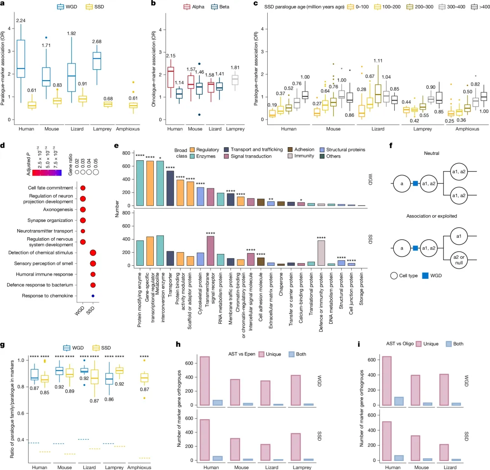
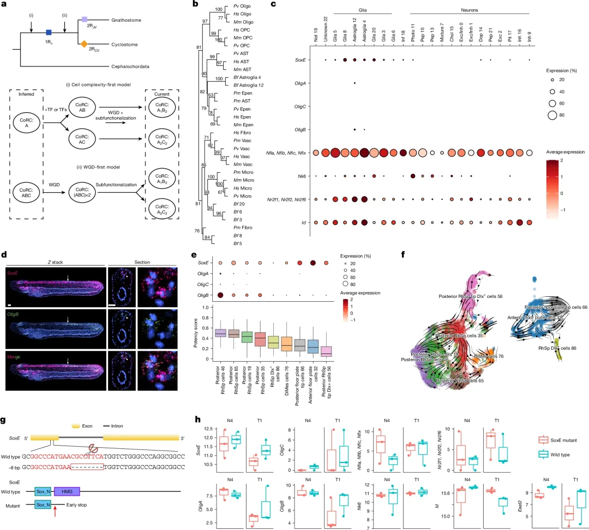
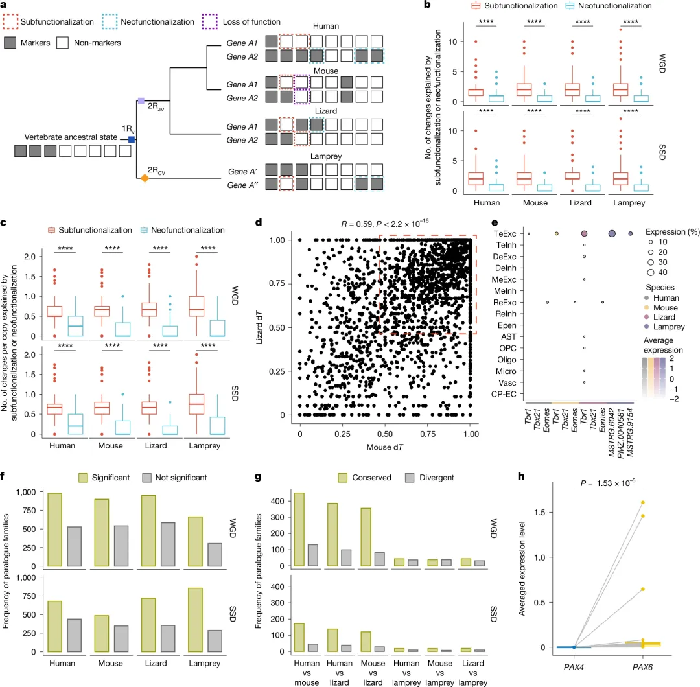
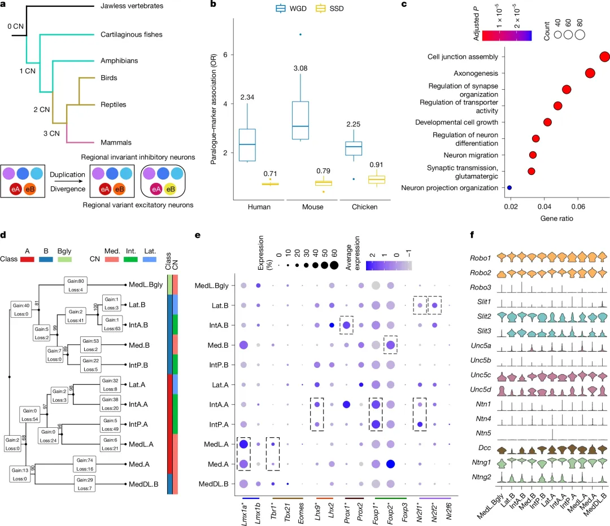

这篇《Nature》解析了五个物种，告诉你为什么单细胞会有不同的细胞类型
原文：https://mp.weixin.qq.com/s?__biz=MzAwMzIzOTk5OQ==&mid=2247538873&idx=1&sn=dbaf84897ede847fe668b32329df96e9&chksm=9b3c21e9ac4ba8ff8e4e36831f4a4a7160b65c7a73719b3ac27df2979c1664baaffabf7c2124#rd 合集：文献速递
一、写在前面
本次分享的是6月10号发布在《Nature》上题为"Whole-genome duplication shaped cell-type evolution in the vertebrate brain"的文章：脊椎动物脑细胞类型数量远超亲缘关系最近的近亲物种。全基因组复制事件（WGD）发生于脊椎动物演化早期，但目前学界尚不明确复制产生的旁系同源基因（ohnologues）是否推动了细胞类型的演化。本研究选取五种脊索动物的大脑单细胞转录组数据开展分析，物种分别为：人（human）、小鼠（mouse）、绿安乐蜥（lizard）、海七鳃鳗（lamprey）以及文昌鱼（amphioxus）。研究结果表明：脊椎动物内大量拥有保守核心转录因子的细胞类型家族，与文昌鱼不存在一一对应的同源细胞类型。
相较于小规模复制产生的旁系同源基因，全基因组复制同源基因（尤其是第一次全基因组复制产生的同源基因）对脊椎动物细胞类型演化起到了更为关键的作用。该研究重构了祖先细胞类型状态，并将其与文昌鱼细胞类型开展比对，同时针对大胶质细胞开展了实验验证。
结果证实，全基因组复制同源基因参与了脊椎动物早期细胞类型分化。通过跨物种、跨细胞类型解析旁系同源基因的表达模式发现：同源基因的表达分化主要由剂量选择与亚功能化驱动。同时作者从解剖结构、细胞类型两个层级，明确了全基因组复制同源基因与细胞多样性的关联。
文章中主要涉及到的生信分析有：
1、scRNA-seq、snRNA-seq数据分析(降维聚类、注释、富集分析等)
2、SAMap跨物种分析
3、DeepTFactor、pySCENIC转录因子预测
4、基于Ohnologs的Ohnologues识别
5、同源基因年龄预估
6、PANTHER网站PANTHER网站
7、pvclust跨物种细胞树构建
8、基于velocyto.py的RNA速度分析
9、CytoTRACE2细胞多能性分析
值得一提的是，本文提到的文昌鱼snRNA-seq采用的是寻因生物的SeekOne DD Single Cell 3'策略，这意味着大家可以无缝接入以下教程：
免费课程+学习手册|SeekGene单细胞/空间组学全家桶，属于你的“进阶通关包”

** **
更多水产相关单细胞参数可见：
** **

** **
如果需要 单细胞数据分析教学、生信热点全文复现、自测数据个性化分析辅导、实验科研服务和常态化实验学习，欢迎联系客服微信[Biomamba_zhushou]。
二、主要结果
脊椎动物祖先早期进化中曾经历过两种WGDs(“2R假说”)，第一个WGD早于圆口类与有颌类谱系的分离，后续两类谱系又各自独立发生了WGD（图 1a）。WGD并非基因复制的唯一方式，需要与大规模小规模片段复制（SSDs）明确区分。大多数复制基因在复制后会丧失，但保留的基因可能会经历功能补充性丧失（亚功能化）和/或进化出新功能（新功能化）。保留的基因也经常被纳入进化中的基因调控网络中，目前普遍认为该过程推动了组织、器官及细胞类型的发育与特化产生新功能。学界也提出了基于共同祖先的细胞类型演化定义：判定同源细胞类型只依据演化起源，不依据形态与功能。新型细胞类型可通过复制分化模型（姊妹细胞类型模型）产生，该模型本身具备层级演化属性 。这也导致多数细胞类型具备物种特异性或演化支特异性。综上，以上问题说明，需要在不同层级、身体不同组织维度开展细胞类型演化研究。
但目前学界对脊椎动物祖先的神经细胞类型库、调控细胞的核心转录因子调控程序，以及早期脊椎动物神经细胞类型的起源依旧认知匮乏。同时，全基因组复制与小规模片段复制产生的旁系同源基因在脑细胞类型演化中发挥的潜在作用，也尚未明确。本文想要探究的，便是这个问题。

Figure 1
1、脊椎动物新型脑细胞类型家族
为比对不同脊椎动物的脑细胞类型，本研究收集了人、小鼠、鬃狮蜥、海七鳃鳗四种脊椎动物的单细胞 RNA（scRNA）与单细胞核 RNA（snRNA）测序数据集。经过滤、下采样、自组装流形算法(SAM)、聚类、SAMap 跨物种映射分析后，四种脊椎动物平均有 94% 的细胞簇可完成可靠的细胞类型注释；文昌鱼 23 个细胞簇中，有 21 个可完成可靠注释。
细胞类型家族定义为：共用同一套分化与身份维持调控程序的一类细胞集合 ，学界已有多种界定标准，包括核心调控复合体（CoRC）、性状身份网络（ChINs）、终末选择因子。据此，本研究预测了各细胞类型家族的特异性转录因子，并依托保守转录因子完成脊椎动物细胞类型家族划分（Figure 1c）。在所有细胞特异性转录因子中，同源域转录因子占比最高，同时也是唯一在四种脊椎动物中均显著富集的转录因子家族。佐证了同源域转录因子作为细胞终末选择因子的功能。
区分神经元与非神经元细胞后，作者开展了SAMap跨物种细胞同源映射（图 1b）。绝大多数细胞簇都映射至同细胞类型家族内的细胞簇。但研究也发现了多处同源异常。海七鳃鳗红细胞映射到了有颌脊椎动物的少突胶质细胞。海七鳃鳗菱脑 γ- 氨基丁酸能神经元，与有颌脊椎动物的同源神经元共享Bhlhe22、Lbx1、Lhx1、Lhx5、Neurodo1、Neurodo2、En2、Hoxb3、Tfap2a、Tfap2b十种转录因子。但两类物种的菱脑细胞映射关系极不稳定，且七鳃鳗缺失部分菱脑细胞的特征标记基因。
本研究结合文昌鱼胚胎单细胞转录组数据，对文昌鱼脑细胞注释结果开展交叉验证（扩展数据图 2a）。SAMap 跨物种细胞同源映射结果显示，文昌鱼星形胶质样细胞可同源映射至脊椎动物大胶质细胞（室管膜细胞、星形胶质细胞、少突胶质细胞）。但文昌鱼绝大多数神经元无法一对一匹配脊椎动物单一细胞类型家族，仅呈现大范围泛同源映射特征（扩展数据图 2c、2d）。调控脊椎动物各细胞类型家族的保守转录因子，在文昌鱼脑中并未表现出显著的细胞特异性表达（图 1d）。文昌鱼胶质细胞高表达星形胶质细胞特征转录因子。这说明文昌鱼胶质细胞与脊椎动物胶质细胞具备部分原始同源身份。文昌鱼与小鼠下丘脑存在功能相似的细胞类型，包括多巴胺能神经元、部分肽能神经元与神经分泌细胞。但和全脑分析结论一致，二者调控同源细胞的核心转录因子存在明显差异。即：脊椎动物绝大多数脑细胞类型家族，起源于脊椎动物干群阶段，依靠特异性转录因子表达分化形成，且分化完成后在后续演化中保持高度保守。
2、全基因组复制与小规模片段复制对细胞类型多样性的差异影响
经统计，人、小鼠、鬃狮蜥、海七鳃鳗汇总得到的全基因组复制同源基因数量分别为6206、6344、5616、4273个；人、小鼠、鬃狮蜥、海七鳃鳗、文昌鱼汇总得到的小规模片段复制旁系同源基因数量分别为5977、6265、5007、6783、11083个。随后在细胞类型家族层面，分别判定两类复制同源基因是否属于细胞标记基因。旁系同源基因与差异表达基因的富集分析结果显示：在所有脊椎动物中，ohnologues显著富集为细胞标记基因；而在所有脊索动物中，SSD呈现完全相反的富集规律（Figure 2a、扩展数据图 4a）。

Figure 2
SSD是连续出现的，而2R的WGDs则发生在特定的进化窗口，这意味着基因复制年龄可能会干扰我们的分析。此外，非对称基因丧失发生在颌骨特异性脊椎动物WGD之后，该基因源自两个谱系α和β的种间杂交。将来自α谱系和β谱系的ohnologues分为来源，并根据估计的复制时间（方法）分类SSD副系体。我们观察到标志物与上文所述的ohnologues或SSD旁系物之间的关联（Fig.2b,c及 Fig.S4b,c）。标记更多地与α型而非β型的ohnologues相关，尤其是人类ohnologues。SSD旁述总体上与标志物呈负面关联。总体来说，最近的SSD表现出比古代SSD更多的负相关性。这些发现得到了其他组织和不同细胞类型水平中类似结果的印证（Fig.S 4d–g）。细胞类型特异性调控子中的转胎和推测目标基因（方法）也表现出与正常同源物和SSD旁系物相同的模式（Fig.S 4h–k）。
通过GO分析（Fig.2d，Fig.S5a）的深入探究，研究者发现ohnologues之所以与SSD paralogues相比更可能与细胞标记相关联，是因为两类基因在功能富集上存在显著差异：ohnologues主要富集于发育、细胞命运决定、信号传导和神经递质运输等过程，而SSD旁系同源基因则富集于免疫反应和感觉知觉（这一结果与先前报道一致，Fig.S5c）。进一步比较发现，α型ohnologues是这一功能差异的主要贡献者（Fig.S5b），同时转录因子、辅助因子和转运蛋白等在基因组加倍后也被优先保留（Fig.2e，Fig.S5d），这些证据共同表明，ohnologues与细胞标记之间的正向关联部分归因于发育调控相关基因（尤其是α型）的优先保留。尽管关联本身并不直接证明ohnologues被用于生成新的细胞类型，但如果这一模式确实反映了在脊椎动物进化中同源基因被用于构建日益特化的细胞类型，那么可以预期一对ohnologues会在不同的细胞类型中发挥作用（Fig.2f）。为了验证这一想法，研究者针对每个细胞类型家族计算了含有标记基因的旁系同源基因家族数量与作为标记的旁系同源基因总数之比，结果发现该比值接近1，且显著高于WGD和SSD旁系同源基因的随机预期（图2g），这一模式在细胞类型层面也得到了证实（扩展数据图5e）。这表明，无论复制类型和细胞类型粒度如何，如果一个旁系同源基因是某特定细胞类型的标记，那么它的其他旁系同源基因很少也成为该细胞类型的标记。值得注意的是，大多数标记旁系同源基因家族仅用于两个姐妹细胞类型中的一个，而不是不同拷贝分别被姐妹细胞类型所使用（图2h,i，姐妹细胞类型鉴定见下文）。
3、WGD与细胞演化
为了探究全基因组复制与细胞类型演化之间的因果关系，研究者提出了两种对立模型：细胞复杂性优先模型（认为新细胞类型先通过新功能化产生，WGD随后发生并被动分配同源基因）与WGD优先模型（认为祖先调控元件已存在保守转录因子，WGD后通过剂量选择和亚功能化将这些同源基因分离到不同细胞类型中，从而驱动细胞类型的分化，Fig.3a）。通过分析文昌鱼这一关键外群，发现其中分离姐妹细胞类型的关键保守转录因子普遍表达，这一结果与WGD优先模型一致。跨头索动物图谱绘制和调控子分析显示，胶质细胞家族的分化比神经元更清晰（Fig.S8），因此研究者聚焦于大胶质细胞进行详细分析。在跨物种胶质细胞演化树中，星形胶质细胞先与室管膜细胞聚类，再与少突胶质细胞聚类，而文昌鱼的星形胶质细胞4/12簇则归入室管膜-星形胶质细胞分支（Fig.3b）。研究鉴定出在星形胶质细胞与少突胶质以及星形胶质细胞与室管膜细胞间的差异基因，其中多个转录因子是分离姐妹细胞类型的终端选择子，例如SoxE同源基因家族中Sox9驱动星形胶质细胞命运、Sox10调控少突胶质细胞分化、Sox8短暂早期表达，而Olig2指定少突胶质细胞前体细胞、Olig1和Nkx6-2促进其分化（Fig.3B）。在文昌鱼胶质细胞簇中，这些保守的祖先调控元件基因呈现共表达（Fig.3c），仅有一个簇中有少量细胞同时表达SoxE和OligB；但对整个成体神经管补充测序（19140个细胞，Fig.S6a）后发现两者共定位显著增强（Fig.S6b）。进一步分析文昌鱼胚胎和七鳃鳗胚胎神经管的单细胞数据，同样证实胶质细胞中SoxE与Olig存在广泛共定位（Fig.S6 c-e），并通过实验验证了共表达（Fig.3d，Fig.S6f），还识别出从高Olig表达向低Olig表达胶质细胞簇的定向轨迹，与多能性分析结果一致（Fig. 3e,f，Fig.S6 g,h）。这些数据表明文昌鱼拥有相当于放射状胶质细胞的细胞类型，可能作为前体产生星形胶质细胞。研究者构建了文昌鱼SoxE突变体（Fig.3g），与脊椎动物中Sox9和Sox10突变导致的严重表型不同，文昌鱼SoxE突变在胚胎期未引起明显形态缺陷，但表现出发育延迟、幼虫鳃裂发育异常及存活率下降；然而，对野生型和SoxE−/−胚胎在N4和T1发育阶段的转录组比较发现，与SoxE共表达的胶质标记基因（包括关键转录因子）在突变体中显著下调（Fig.3h），表明SoxE对文昌鱼胶质分化至关重要。综上，这些数据揭示了文昌鱼胶质细胞共表达脊椎动物大胶质细胞姐妹细胞类型分离所需的转录因子，据此推断这是大胶质细胞的祖先状态，而文昌鱼这些细胞相当于放射状胶质细胞；在脊椎动物中，这些转录因子的同源基因通过WGD得以分离并分别控制不同的大胶质细胞亚型。

Figure 3
4、亚功能化与新功能化
通过对旁系同源基因在不同细胞类型中表达模式的系统分析，研究者旨在确定亚功能化与新功能化这两种机制在全基因组复制和小规模复制产生的旁系同源基因演化中究竟何者占据主导地位（Fig.4a）。通过将表达二值化为“标记”或“非标记”，并以至少在四种脊椎动物中的三种中有一个旁系同源基因作为标记的最小细胞类型组作为脊椎动物的祖先状态，研究构建了1872个同源基因正交群、1050个SSD旁系同源正交群和2693个旁系同源正交群（其中339个重叠）。对每个物种相对于推断祖先状态的标记使用变化进行计算后发现，在所有变化中，约78%可归因于亚功能化，约21%归因于新功能化，而功能丧失（该细胞类型中所有拷贝均失去标记状态）占比不足1%（Fig.4b,c）。无论对于旁系同源、SSD旁系同源还是同源基因正交群，这一比例均保持相对一致，且在所有物种和复制类型中，由亚功能化解释的变化数量和每个基因的变化数量均显著高于新功能化；仅分析羊膜动物或使用基于Trinarization评分的二值化表达矩阵也得到相似趋势（Fig.S7a-e）。这一发现表明，脊椎动物演化过程中旁系同源基因用于细胞类型特化的过程主要受亚功能化驱动，为重复-退化-互补模型提供了最强有力的支持。研究者进一步探究旁系同源正交群中的基因表达在不同物种间是否发生相似程度的偏移，通过在 homologous 细胞类型家族水平上基于Trinarization评分定义表达域并计算每个正交群内旁系同源基因间的平均表达分化度（dT），发现大多数旁系同源基因在两物种中均已广泛分化，部分则主要在一个物种中发生偏移（Fig.4d，Fig.S7f）。例如，T-box基因的Tbr1亚家族在脊椎动物基部通过WGD产生有颌类中的Tbr1、Eomes和Tbx21，在人类、小鼠和蜥蜴中dT=1，在七鳃鳗中dT=0.67（Fig.7g）；在数据集中，Tbr1专一表达于端脑谷氨酸能神经元，而Eomes则表达于羊膜动物菱脑谷氨酸能神经元（Fig.4e）。

Figure 4
5、不同细胞类型中的剂量选择
通过对剂量选择、区域特性及WGD长期影响的系统分析，研究者进一步揭示了全基因组复制驱动细胞类型演化的深层机制。基于基因平衡假说，单细胞水平的检测发现，无论WGD还是SSD来源的旁系同源基因家族，其中大部分（超过65%）存在一个在表达水平或表达细胞比例上显著占优的拷贝，且这种显性优势普遍存在而非局限于特定细胞类型（图4f）。同源基因相比SSD旁系同源基因具有更多的蛋白质相互作用，其编码的转录因子调控更多的靶基因且靶基因更为相似，同时编码序列受到更强的进化约束。不同物种使用同一显性拷贝的相似性比较中，人类与小鼠最高，且在全部物种对比中，同源基因家族共享显性拷贝的数量均高于SSD家族（图4g），如PAX6在多种细胞类型中高表达而PAX4表达有限（图4h）。这表明剂量选择在基因复制（尤其是WGD）后很快发生，并在谱系分化之前就已确立，使得旁系同源基因在亚功能化或新功能化发生前得以长期保留。
6、基因组复制与区域特性关系
基因组复制与区域特性关系方面，细胞类型功能的实现常依赖于恰当的区域特性。以大胶质细胞亚型为对象，星形胶质细胞呈现最强的区域异质性（扩展数据图9a）。同源基因与人类及小鼠星形胶质细胞和少突胶质细胞亚型的差异表达基因显著相关，但与室管膜细胞无关（扩展数据图9b）。鉴定出的区域及细胞类型特性相关基因（扩展数据图9c）在不同细胞类型间显著重叠（扩展数据图9d），且其所属正交群在物种间高度共享（扩展数据图9e）。这些区域化正交群的平均拷贝数（2.5–3.4）显著大于各物种正交群的平均大小（1.3–1.5），并且与同源基因的关联性强于SSD旁系同源基因（扩展数据图9f）。与文昌鱼的比较分析提示，脊椎动物中许多区域调控程序（如端脑的Foxg1）是在WGD之后才出现的，这些转录因子经过优先保留和表达转变，推动了脊椎动物脑区中细胞类型家族的多样化。
7、WGD对细胞类型演化具有持久影响
即使对于WGD1之后至少1.5亿年才明确出现的小脑核细胞类型也是如此。脊椎动物演化中，原型小脑核及其保守的细胞亚型组合发生了多次复制（图5a）。聚焦于小脑核兴奋性神经元，分析结果再次确认同源基因与差异表达基因之间的正相关性（图5b），且20个实验验证的标记基因中有13个为同源基因（补充表7）。差异表达基因富集于轴突发生、轴突导向、迁移及突触组织等功能（图5c）。通过层次聚类构建细胞类型树并鉴定分支事件中的关键转录因子，发现Lmx1a、Tbr1、Lhx9、Prox1、Foxp1、Foxp2、Nr2f1和Nr2f2等在多个羊膜动物中保守，这些基因多为同源基因并在不同细胞亚型中呈现特异的表达模式（图5d,e）。值得注意的是，鲨鱼在小脑核发育早期共表达Lhx9和Tbr1，而小鼠中Lhx9的表达域扩展至形成外侧核的区域。此外，许多编码轴突导向分子的同源基因也呈现差异表达（图5f）。这些发现共同表明，古老的同源基因在WGD发生很久之后，仍然持续参与姐妹细胞类型的复制与分化过程。

Figure 5
三、最后聊聊
通过对早期脊椎动物两次全基因组复制的系统分析，本研究揭示了其对神经细胞类型演化和脑复杂性的重要贡献。跨物种比较表明，亚功能化是两类复制在演化上的主导结果；在表达水平或表达基因的细胞比例层面均观察到了广泛的剂量选择，这为基于 bulk 转录组的发现提供了细胞水平解释，而重复-退化-互补模型与基因平衡假说共同为这些观察提供了理论支持。细胞类型的保守性普遍存在于脊椎动物内部而非延伸到文昌鱼，这与1R WGD（发生在七鳃鳗分歧之前且贡献的同源基因多于2R WGD）的相对重要性相符。虽然关联性并不证明同源基因是必要因素，且证明2R WGD这类超过4.5亿年前的古老演化过程中的因果关系本身具有挑战性，但文昌鱼数据集的建立使验证成为可能。构建的模型用于预测祖先调控状态以反映细胞类型出现在1R WGD之前还是之后，文昌鱼数据以及亚功能化的普遍性均支持WGD优先模型。以大胶质细胞中SoxE及相关转录因子的分析为例，结果表明祖先脊索动物已存在共表达SoxE、Olig和Nfia/Nfib/Nfix的放射状胶质细胞，WGD后这些家族中的同源转录因子发生功能分化，从而支持了新细胞类型的个体化；值得注意的是，文昌鱼SoxE突变体的表型远比脊椎动物SoxE敲除温和，这一结果可能具有普遍性（如Foxj1、Pax6、Mnx等转录因子敲除在文昌鱼中同样表型微弱），反映了文昌鱼中许多关键转录因子的广泛表达特征，与WGD优先模型一致。需要强调的是，WGD并非细胞类型创新的必然路径——其他谱系中也鉴定出WGD但缺乏类似创新的证据。
综上所述，本研究认为早期脊椎动物演化中的全基因组复制对脊椎动物神经细胞类型及脑复杂性的演化起到了重要作用：第一次WGD与许多脊椎动物主要脑细胞类型的起源相关联，第二次WGD在有颌类中进一步增加了这一多样性（尽管贡献相对较小）；这种效应在WGD发生数亿年后仍然持续存在，同源基因对羊膜动物小脑核中较新的细胞类型多样性变化依然重要，并且这些效应很可能超越脑组织范畴，反映了这两次WGD的普遍性后果。
参考：
Zhu Y, Zhang S, Wei J, Dolgetta-Garcia D, Jindrich K, Liu H, Shi C, Pan R, Chen Y, Xu Y, Li Q, Wagner GP, Holland PWH, Li G, Shimeld SM. Whole-genome duplication shaped cell-type evolution in the vertebrate brain. Nature. 2026 Jun 10.

如何联系我们

 留一个领取资料、开箱即用的单细胞分析镜像的微信号[Biomamba_zhushou]，方便各位随时交流。同时我们也构建了交流群矩阵，欢迎大家入群讨论。
大家可以阅读完这几篇之后添加给生信入门初学者的小贴士
如何搜索公众号过往发布内容
留一个领取资料、开箱即用的单细胞分析镜像的微信号[Biomamba_zhushou]，方便各位随时交流。同时我们也构建了交流群矩阵，欢迎大家入群讨论。
大家可以阅读完这几篇之后添加给生信入门初学者的小贴士
如何搜索公众号过往发布内容
已有生信基地联系方式的同学无需重复添加

 您点的每个赞和在看，我都认真当成了喜欢
您点的每个赞和在看，我都认真当成了喜欢